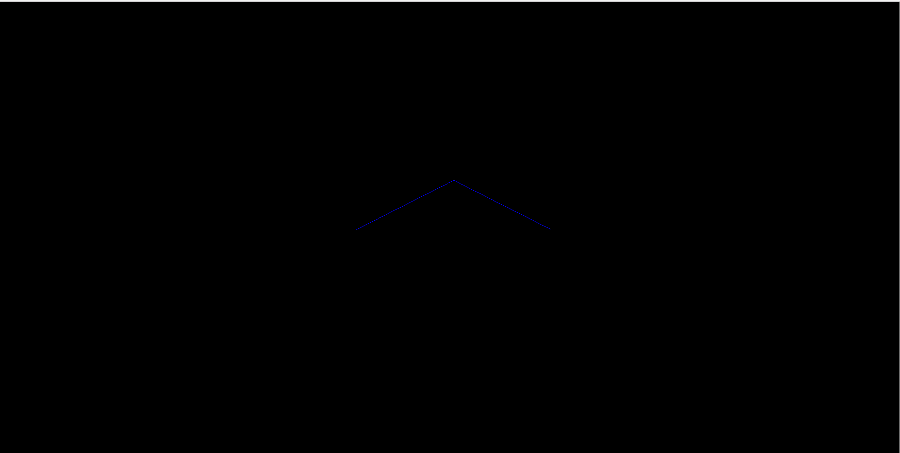

假设你只想画一条线或者一个圆，而不是想画一个网格线框状的几何形图形。 第一步，我们需要设置renderer、scene以及camera（可以参考《创建一个场景》）
我们将使用以下代码：
var renderer = new THREE.WebGLRenderer();
renderer.setSize(window.innerWidth,window.innerWidth);
document.body.appendChild(renderer.domElement);
var camera = new THREE.PerspectiveCamera();
camera.position.set(0,0,100);
camera.lookAt(new THREE.Vector3(0,0,0));
var scene = new THREE.Scene();
接下来，我们将定义一个material。我们可以使用LineBasicMaterial或者LineDashedMaterial两个类。
//创建一个蓝色的LineBasicMaterial
var material = new THREE.LineBasicMaterial({color:0x0000ff});
在创建material之后，我们需要一个拥有一些顶点的Geometry或者BufferGeometry（一般为了拥有更好的性能，建议使用BufferGeometry，然而我们这里为了简单所以使用Geometry）：
var geometry = new THREE.Geometry();
geometry.vertices.push(new THREE.Vector3(-10,0,0));
geometry.vertices.push(new THREE.Vector3(0,10,0));
geometry.vertices.push(new THREE.Vector3(10,0,0));
注意，three.js是在连续的每一对定点之间画线，但是不是之间的第一个和最后一个（线不是闭合的）；
现在我们拥有两条线的点以及指定的材质，我们可以在Line中将他们放置在一起。
var line = new THREE.Line(geometry,material);
剩下的就是将line添加到scene中，并且渲染他们。
scene.add(line);
renderer.render(scene, camera);
你现在应该能够看到由两个蓝线组成的向上的箭头
效果图
结尾
以下是该节的完整示例代码，使用它用以更好的理解下面的代码。
<!DOCTYPE html>
<html lang="en">
<head>
<meta charset="UTF-8">
<title>绘制线条</title>
<style type="text/css">
body { margin: 0; padding:0;}
canvas { width: 100%; height: 100% }
</style>
<script src="js/three.js"></script>
</head>
<body>
<script>
var renderer = new THREE.WebGLRenderer();
renderer.setSize(window.innerWidth,window.innerHeight);
document.body.appendChild(renderer.domElement);
var camera = new THREE.PerspectiveCamera();
camera.position.set(0,0,100);
camera.lookAt(new THREE.Vector3(0,0,0));
var scene = new THREE.Scene();
var material = new THREE.LineBasicMaterial({color:0x0000ff});
var geometry = new THREE.Geometry();
geometry.vertices.push(new THREE.Vector3(-10,0,0));
geometry.vertices.push(new THREE.Vector3(0,10,0));
geometry.vertices.push(new THREE.Vector3(10,0,0));
var line = new THREE.Line(geometry,material);
scene.add(line);
scene.add(camera);
renderer.render(scene,camera);
</script>
</body>
</html>